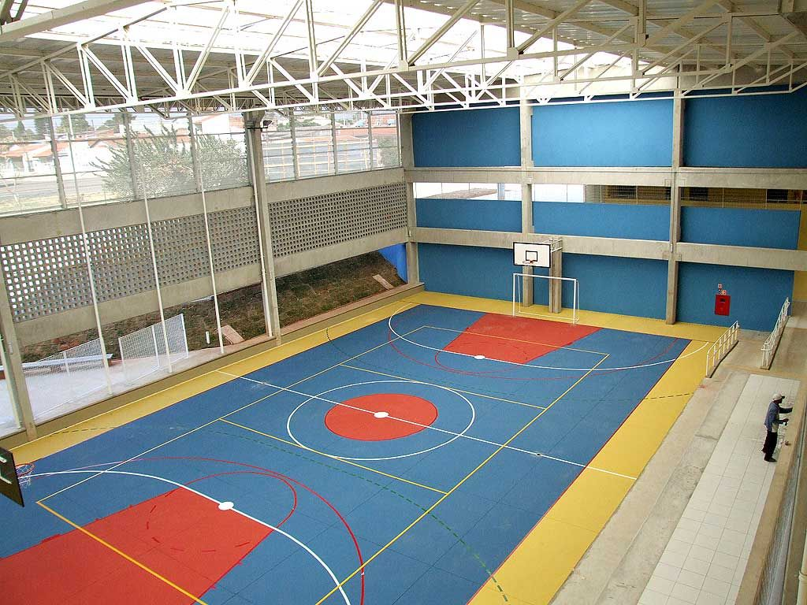

Temos diversas salas de aula que turmas da manhã e tarde utilizam para realizar atividades escolares do dia a dia.

A quadra é usada para aulas de educação física, jogos de basquete, futebol, vôlei e entre outros, contemplando vivência dos alunos com atividades físicas saudáveis
Nosso(s) laboratório(s) visam impulsionar primeiro contato dos alunos com informática e tecnologia, acaso não tenham em casa, podemos fornecer e ser exemplo para esses alunos que não tem oportunidade.

Nossa biblioteca conta com acervo de vários livros diferentes com objetivo de chamar alunos para estimular suas habilidades de leitura e aprendizado para no futuro terem mente mais instigante